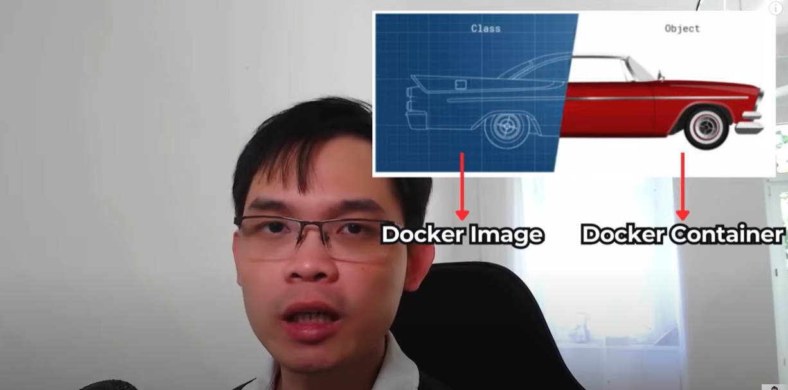
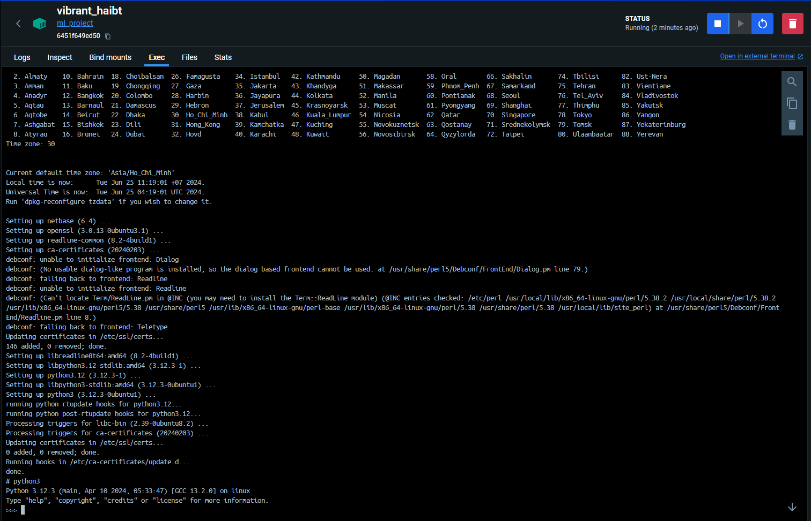

Edit: an other great source for Docker - https://levelup.gitconnected.com/working-with-docker-and-docker-compose-9773295b4d51
Xuất phát là dân Kinh tế và hiện tại đi theo hướng DS, mình không giỏi làm việc với các công cụ phát triển phần mềm, Docker là một trong số đó. Tuy nhiên trong một dự án Data của team, mình cần sử dụng các công vụ như Airflow, Airbyte hay DBT. Hầu hết các setup đều cần Docker. Do đó thì, phải học thôi!
Mình học tập theo video “Hướng dẫn từ A-Z tự xây dựng ứng dụng với Docker” của anh Việt Nguyễn AI.
Introduction / Docker Desktop / Docker Image vs Docker Container
- Cách cài đặt: trên trang get started, phiên bản Window (rất dễ để mình follow do mình cũng xài Win).
- Nhắc lại về Docker Image và Docker Container: giống như Class và Object trong OOP, Image chỉ cho chúng ta biết một cách lý thuyết về thực thể đó, khi dựa vào lý thuyết đó tạo ra một Container thì chũng ta mới có một thực thể dự vào lý thuyết đó.
- Trước Docker Image, còn có Dockerfile (giống như công thức nấu ăn) giúp định nghĩa một số phương thức tạo ra Image.

Docker tutorial
Thực hành theo tutorial trên Docker Desktop: “How do I run a container?”
Nội dung Dockerfile:
# Start your image with a node base image
FROM node:18-alpine
# Mỗi custome docker image đều dựa vào một base image, như một class con kế thừa một class cha. Nơi tìm Docker Image: Docker Hub.
# The /app directory should act as the main application directory
WORKDIR /app
# Chúng ta làm việc ở bên trong thư mục nào (nếu không đề cập thì sẽ tạo trong một thư mục mặc định)
# Copy the app package and package-lock.json file
COPY package*.json ./
# Copy các file trong máy vào bên trong Docker Image - file này chắc là file cấu hình
# Copy local directories to the current local directory of our docker image (/app)
COPY ./src ./src
COPY ./public ./public
# Copy các thư mục source
# Install node packages, install serve, build the app, and remove dependencies at the end
RUN npm install \
&& npm install -g serve \
&& npm run build \
&& rm -fr node_modules
# Run, cài đặt các thư viện, package
EXPOSE 3000
# Mở một cổng ở trong Docker container, sau này chúng ta sẽ kết nối cổng này với một cổng trong máy của chúng ta.
# Start the app using serve command
CMD [ "serve", "-s", "build" ]
# Chúng ta muốn chạy lệnh gì trong CMD, chỉ một lệnh CMD (lệnh cuối cùng) sẽ được sử dụng trong một Dockerfile.Build fist image:
Breaking down this command:
The -t flag tags your image with a name. (welcome-to-docker in this case). And the . lets Docker know where it can find the Dockerfile.
Tự xây dựng Docker Image để huấn luyện mô hình AI
Giới thiệu về script Python
Mình có một file python đơn giản, huấn luyện một mô hình ml_project Random forest để nhận diện hoa diễn vĩ từ bộ iris dataset với thư viện sklearn như sau:
iris_classification.py
#| eval: false
# importing required libraries
# importing Scikit-learn library and datasets package
from sklearn import datasets
# Splitting arrays or matrices into random train and test subsets
from sklearn.model_selection import train_test_split
# importing random forest classifier from assemble module
from sklearn.ensemble import RandomForestClassifier
# importing scaler
from sklearn.preprocessing import StandardScaler
# metrics are used to find accuracy or error
from sklearn.metrics import accuracy_score
# Loading the iris plants dataset (classification)
iris = datasets.load_iris()
# dividing the datasets into two parts i.e. training datasets and test datasets
X = iris.data[:, [2, 3]]
y = iris.target
# i.e. 70 % training dataset and 30 % test datasets
X_train, X_test, y_train, y_test = train_test_split(X, y, test_size = 0.20, random_state=0)
scaler = StandardScaler()
x_train = scaler.fit_transform(X_train)
x_test = scaler.transform(X_test)
model = RandomForestClassifier()
model.fit(x_train, y_train)
y_pred = model.predict(x_test)
for pred, label in zip(y_pred, y_test):
print("Prediction: {}. Label: {}".format(pred, label))
print("Accuracy: %.2f" % accuracy_score(y_test, y_pred))Tìm Base Image trên Docker Hub
Chúng ta có thể tìm các class cha ~ base image trên hub.docker.com, chúng ta muốn app ml này chạy trên ubuntu, do đó có thể start từ image ubuntu.
Mình xây dựng Dockerfile một cách đơn giản như sau:
Từ Dockerfile này mình có thể build image thông qua command sau:
Run một docker container (container vừa run sẽ lập tức exit):
Nếu muốn “chui” vào bên trong container:
-it nghĩa là chúng ta chạy container dưới interactive mode, bash nghĩa là chạy trong bash mode, chúng ta có thể thực hiện các câu lệnh bash từ đây.
Cài đặt các thư viện trong Docker Image
Bây giờ ta mới chỉ có duy nhất hệ điều hành ubuntu trong container, chưa có python để chạy ứng dụng. Trong ubuntu, ta dùng apt-get để cài đặt python. Chúng ta sẽ thực hiện các lệnh trên bash ở container hiện tại trước, sau đó mới đưa vào Dockerfile với lệnh RUN. Dưới đây là Dockerfile cập nhật:
Dockerfile
Sử dụng exit() hoặc Ctrl-D để thoát Python mode hoặc Container trong Powershell.
Chúng lại truy cập bash của container đang chạy từ Docker desktop hoặc Powershell:

Copy dữ liệu từ host vào Docker Image
Bây giờ chúng ta muốn rằng sau khi vào container, chúng ta không ở thư mục root nữa mà ở src ~ ứng chúng của chúng ta, với mục đích dễ làm việc hơn. Chúng ta thêm cú pháp WORKDIR /src. Đồng thời cũng cần cài đặt sklearn để ứng dụng có thể chạy. Đồng thời, sau khi tất cả được cài đặt, mình cũng muốn chạy luôn ứng dụng, sử dụng CMD.
Cập nhật Dockerfile như sau:
Dockerfile
FROM ubuntu
WORKDIR /src
# Khi ở trong docker container, mặc định chúng ta sẽ ở root, giờ ta muốn khi vào container, chúng ta sẽ vào /src
RUN apt-get update
RUN apt-get -y install python3
RUN apt-get -y install python3-sklearn
# -y tự động điền yes khi có các câu hỏi Y/N
COPY iris_classification.py ./iris_classification.py
CMD [ "python3", "iris_classification.py" ]End
Sau khi hoàn thiện, mình không cần chạy containter ở interactive mode và tương tác bằng bash nữa. Lệnh run có thể viết gọn như sau:
Bài thực hành đến đây kết thúc 🎉.